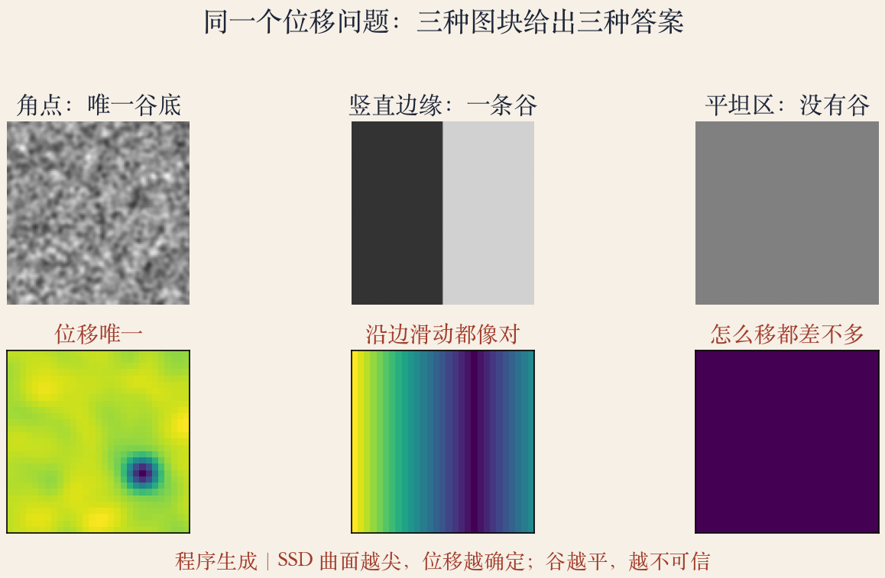
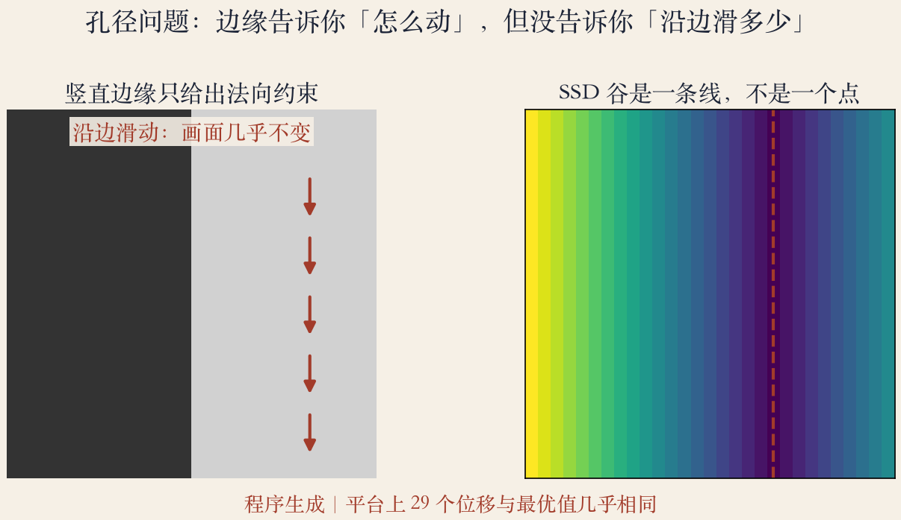
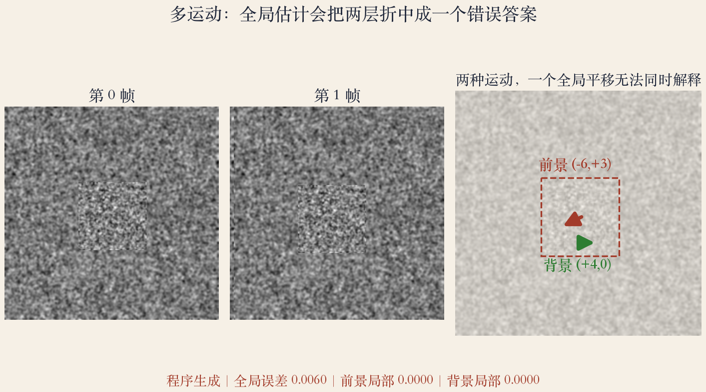

第 9 章开篇 · 运动估计
从全景到会动的画面
- 第 8 章把静态画面拼成全景。
- 第 9 章问：画面里的东西怎么动？
- 先拆问题：比什么、搜什么、何时不能信。
- 先建立直觉，再进公式。
依据：原书第 555–558 页
三个问题
比什么：误差度量
搜什么：搜索策略
什么时候不能信
应用 · 防抖
运动估计：最常用的工具之一
- 对齐图像、估计视频运动很常用。
- 数码相机防抖就是逐帧对齐。
- 手机在估两帧位移，再把画面掰回去。
- 难点在估得准，不在硬件。
依据：原书第 557 页
应用 · 视频编码
卢卡斯-卡纳德：图块平移对齐
- 图块平移对齐是光流的早期代表。
- 变体用于 MPEG/H.263 和 HEVC/H.265。
- 视频不存每帧全部像素。
- 块匹配找最像的位置，再编码位移。
依据：原书第 557 页
两个编码标准
MPEG/H.263
HEVC/H.265
都在用运动补偿
模型 · 参数运动
参数运动：整幅一个模型
- 应用：视频摘要、防抖、压缩。
- 假设整幅画面按同一模型动。
- 模型可以是平移、旋转、缩放。
- 遇到多个独立运动就会露馅。
依据：原书第 557 页
模型的边界
参数少、抗噪好
模型选错，误差系统性地留下
先知道边界，再谈算法
流程 · 度量与搜索
流程：先定度量，再谈搜索
- 先选误差度量，比较两幅图。
- 再设计搜索方法。
- 全搜索太慢，常用金字塔或傅里叶。
- 度量选错，搜索再快也白搭。
依据：原书第 557 页
顺序不能反
先定怎么算像
再谈怎么找得快
度量决定奖励什么对齐
流程 · 搜索策略
搜索：由粗到细
- 全搜索：每个位移都试一遍。
- 图越大、范围越宽，计算量涨得越快。
- 金字塔：粗层定大位置，逐层细化。
- 傅里叶：把相关搬到频域。
依据：原书第 557 页
计算量
小图块能暴力搜
真实视频要分层
上一层结果给下一层当初值
精度 · 亚像素
亚像素：还差零点几
- 整数位移还不够。
- 用局部梯度估还差零点几像素。
- 泰勒展开把图像随位移变化线性化。
- 差半个像素，画面就会抖。
依据：原书第 557 页
模型 · 光流与分层
模型：参数、光流、分层
- 整幅一个参数模型，叫参数运动。
- 多个独立或非刚体运动，用通用光流。
- 遮挡复杂时，用分层运动模型。
- 先看是一个整体，还是多个物体。
依据：原书第 557 页
模型 · 分层运动
分层：前景背景各动各的
- 前景和背景各成一个层。
- 每层有自己的运动。
- 遮挡边缘由层的顺序决定。
- 层数和像素归属都要估。
依据：原书第 557 页
实验一 · 三种图块
证据：曲面尖不尖
- 角点：平方差曲面有唯一谷底。
- 边缘：谷是一条线，平台 29 个位移。
- 平坦区：整张曲面一样。
- 位移能不能信，先看曲面尖不尖。
依据：本集实验

三种图块与 SSD 曲面：角点唯一、边缘成谷、平坦区无信息｜程序生成，未用教材或论文原图
实验二 · 孔径问题
孔径：沿边滑多少不知道
- 竖直边缘只约束水平方向。
- 沿边上下滑动，画面几乎不变。
- 法向五像素，沿边落在负十四。
- 平台上有二十九个位移同分。
依据：本集实验

孔径：竖直边缘的 SSD 谷是一条线，沿边滑动都像对｜程序生成，未用教材或论文原图
实验三 · 两层运动
多运动：一个全局不够
- 前景往左下，背景往右。
- 全局平移估到向右四像素。
- 全局误差零点零零六。
- 前景局部和背景局部误差近零。
依据：本集实验

两层运动：全局平移把前景和背景折中成一个错误答案｜程序生成，未用教材或论文原图
提醒 · 运动常是错觉
错觉：看起来动不等于真动
- 光照变化，像素值会变。
- 遮挡区没有对应点。
- 噪声和压缩伪影会伪造细节。
- 光流是看起来怎么动，不一定真动。
依据：原书第 558 页
动手前 · 三个问题
动手前先问三问
- 度量怕不怕光照和噪声？
- 搜索会不会掉进局部极小？
- 结果有没有一致性验证？
- 先小数据，再上视频。
依据：本集实验
下一集 · 平移对齐
下一集：从平方差开始
- 下一集从平移对齐开始。
- 写平方差，谈亮度不变。
- 看什么时候位移唯一。
- 再往后是金字塔、傅里叶、光流方程。
依据：原书第 558 页
第 9 章开篇 · 收束
第 9 章入场
- 先定误差度量，再选搜索策略。
- 角点唯一、边缘孔径、平坦无信息。
- 多个运动要分层，不能硬套全局。
- 下一集把问题变成可计算的公式。
依据：原书第 557–558 页